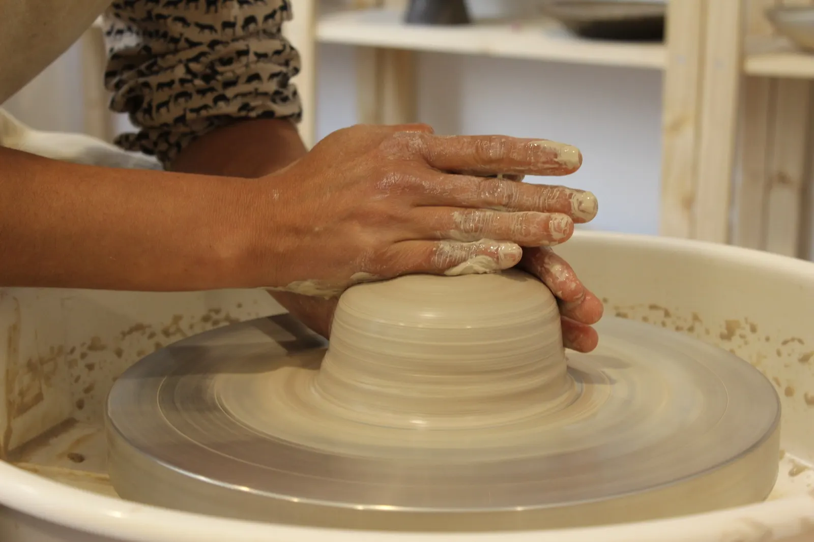
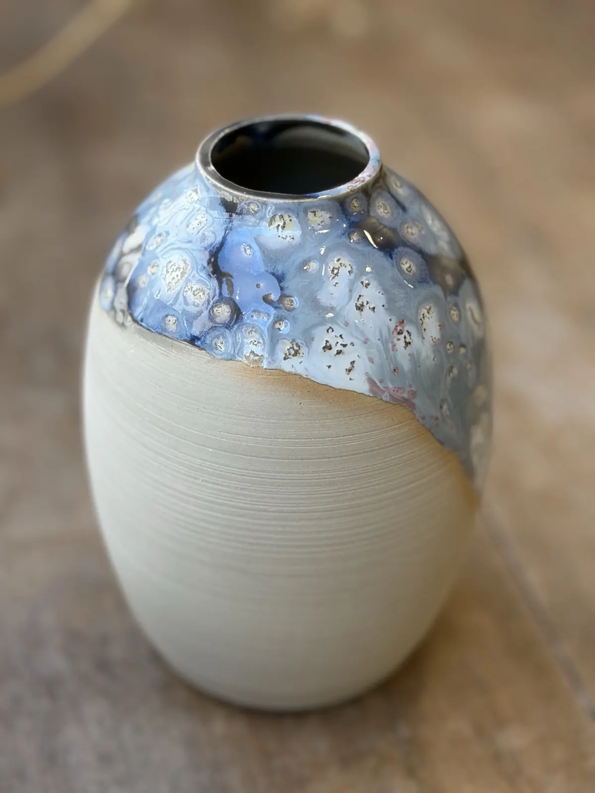
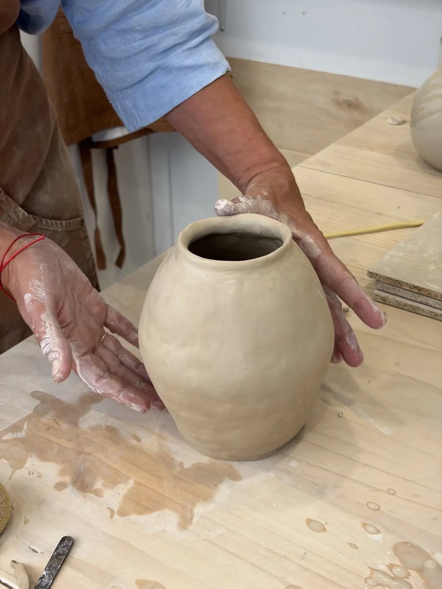
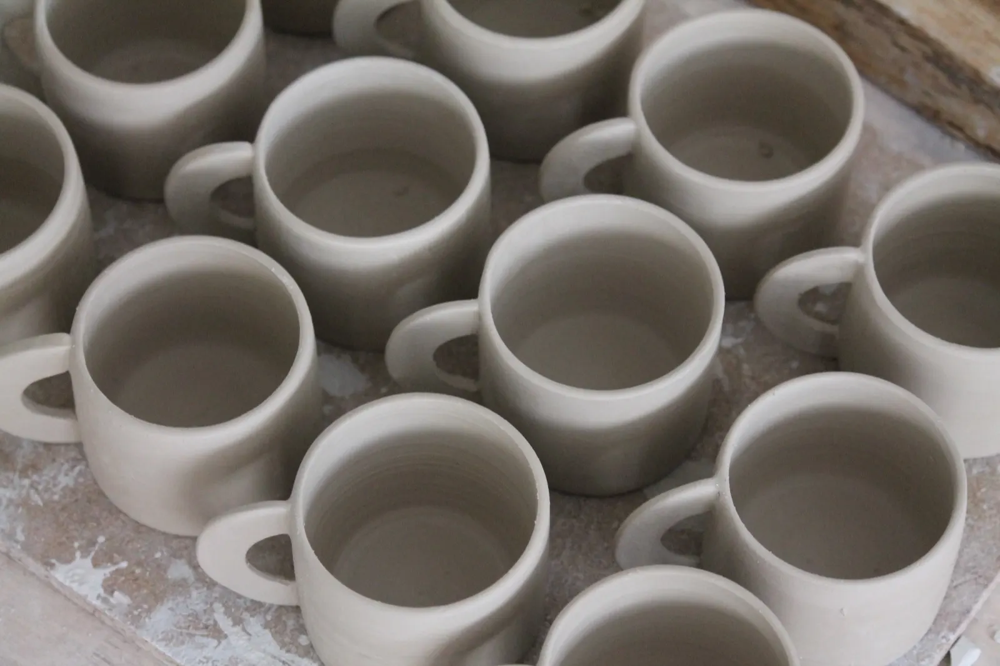
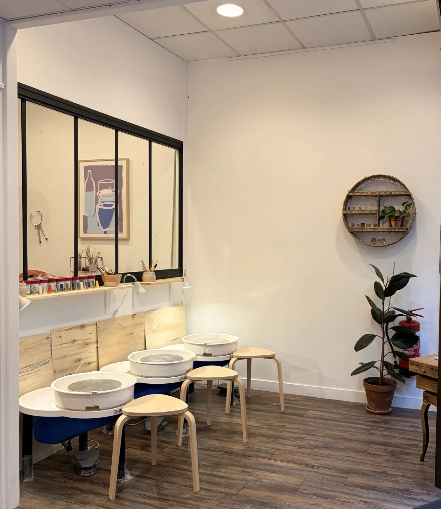
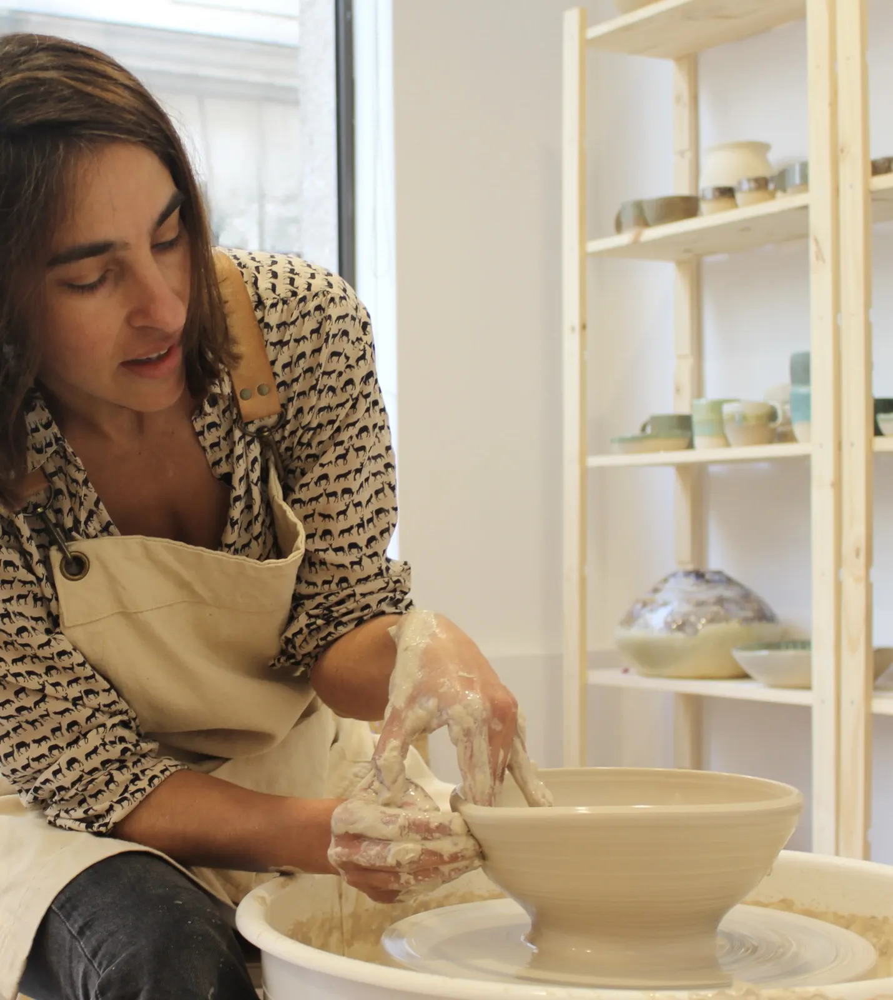
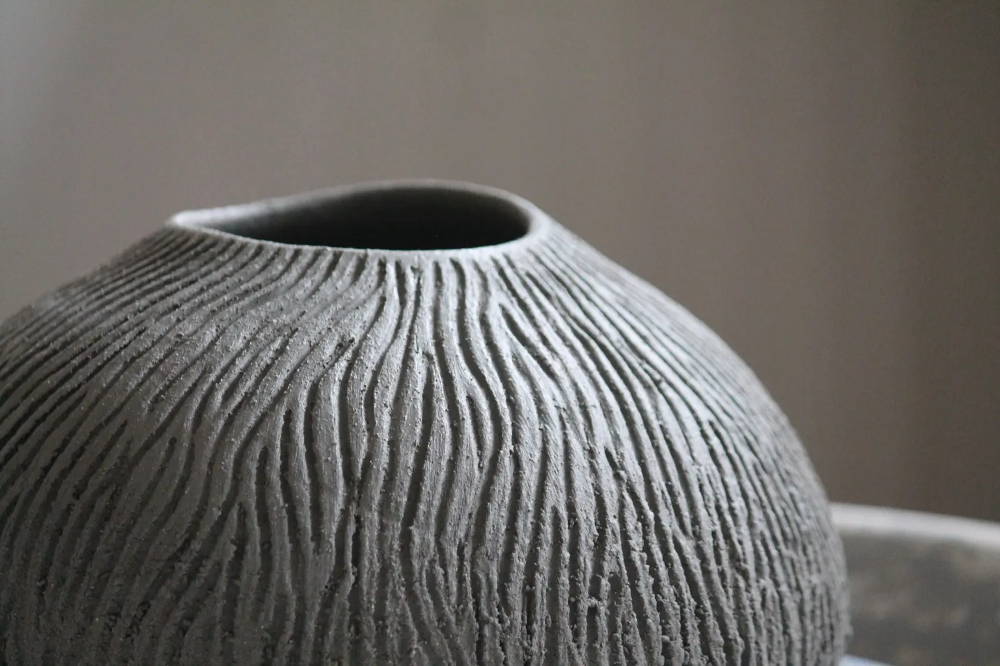
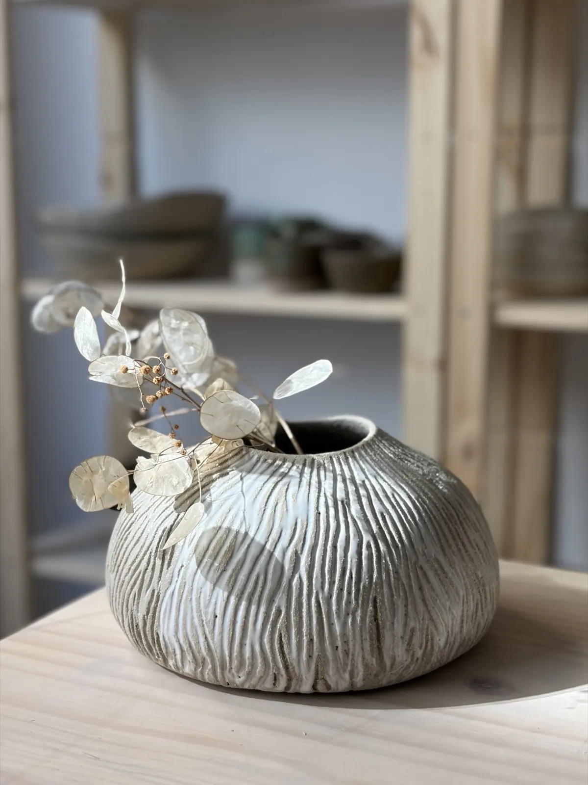
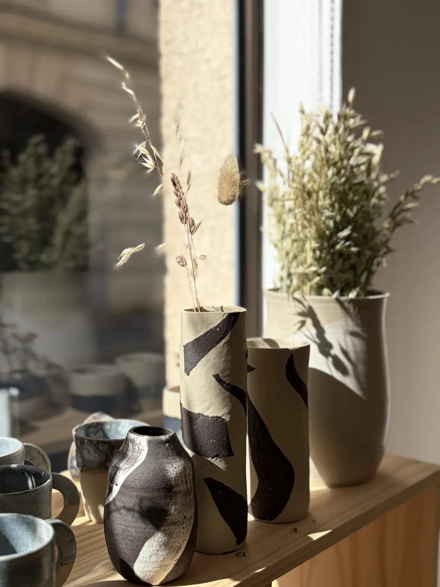
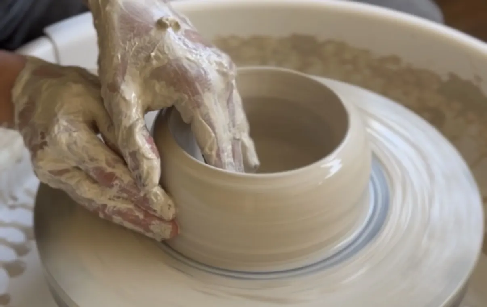

La terre garde la trace du geste.
Bienvenue chez Cò Ceramic. Je suis Rocío San Juan, céramiste argentine installée à Poitiers depuis 2023. Dans mon atelier-boutique, je crée des pièces uniques en grès et je partage ma passion à travers des cours et des ateliers.
Atelier et boutique au 59 rue Carnot, à Poitiers.


- À Poitiers depuis 2023
- Pièces uniques en grès
- Modelage et tournage, tous niveaux
- Matériel et cuisson compris
Des ateliers pour apprendre, expérimenter et créer avec la terre.
Modelage et tournage au centre-ville de Poitiers, que vous soyez débutant ou passionné : un moment de création et de détente.

Séances uniques
Atelier Petit-Déjeuner
69 €Votre ensemble tasse et assiette en grès, pour s'initier aux gestes de la terre : modelage et estampage.
Le samedi, de 14 h à 16 h 30Atelier Vase
55 €Un petit vase unique, selon vos envies, aux techniques traditionnelles du modelage : colombin ou plaque.
Le samedi, de 10 h à 12 hAtelier Enfants
45 €par enfantDeux heures pour découvrir l'argile, apprendre les bases du modelage et créer sa propre pièce, dans une ambiance ludique et bienveillante.
Atelier de Noël
45 €par personneOrnements, suspensions, étoiles, sapins : vos décorations en céramique, à offrir ou à garder. Adultes et enfants, matériel et cuisson inclus.
2 heures, de 10 h à 12 hCours réguliers
Tournage et décor
160 €les 4 coursProgressez à votre rythme sur le tour : de la préparation de l'argile au tournage, puis le tournassage et l'émaillage. Forfait de 10 cours : 370 €.
Modelage et décor
160 €les 4 coursQuatre cours de 2 heures répartis sur un mois : trois dédiés aux techniques du modelage, un au décor des pièces réalisées.
Chaque atelier comprend tout le matériel, l'accompagnement pas à pas, la décoration de la pièce, la cuisson et la récupération de votre création une fois terminée.
Places limitées, réservation conseillée par mail ou par téléphone. Modification ou annulation possible jusqu'à 7 jours avant le cours.

L'atelier-boutique, au 59 rue Carnot.
Venez découvrir mon univers céramique. C'est ici que je donne mes cours et que je vends mes pièces. J'utilise souvent le tour et je fabrique généralement mes propres émaux.
Voir le plan d'accèsLes cours réguliers
- Lundi et mardi
- 10 h – 12 h
- Mercredi
- 18 h – 20 h


Céramiste d'Argentine, et aussi d'ailleurs.
- Buenos AiresMon cher atelier du quartier de Palermo, quitté en 2017.
- Madrid, 2018Des cours de poterie à Caolín Cerámica, l'atelier ouvert en pleine pandémie dans le quartier de Las Letras.
- Poitiers, 2023L'atelier-boutique de la rue Carnot, où je donne des cours et vends mes pièces.
« Je m'efforce de trouver un équilibre entre l'esthétique et le fonctionnel. Mon inspiration vient du quotidien, des gens et de la nature. »
Les créations.
Des pièces uniques et des petites séries, réalisées à la main dans mon atelier. Chaque pièce raconte un moment de création.



Offrez un bon cadeau Cò Ceramic : un atelier, ou le montant de votre choix à dépenser dans la boutique.
Les cartes cadeaux ne sont ni échangeables ni remboursables.

Passez à l'atelier, ou écrivez-moi.
- Téléphone
- 07 67 09 93 70
- coceramicstudio@gmail.com
- Adresse
- 59 rue Carnot, 86000 Poitiers
- @coceramicstudio
Les réservations d'ateliers et les bons cadeaux se font par mail ou par téléphone.